1. vježba- izrada fonta
Izradila sam svoj font u FontForge-u tako što sam prvo postavila projekt i dizajnirala znakove svoga imena i prezimena koristeći alate za crtanje i mreže za preciznost. Zatim sam podesila pravilne razmake između znakova. Na kraju sam testirala font u različitim aplikacijama i generirala završni .ttf format za instalaciju i distribuciju.
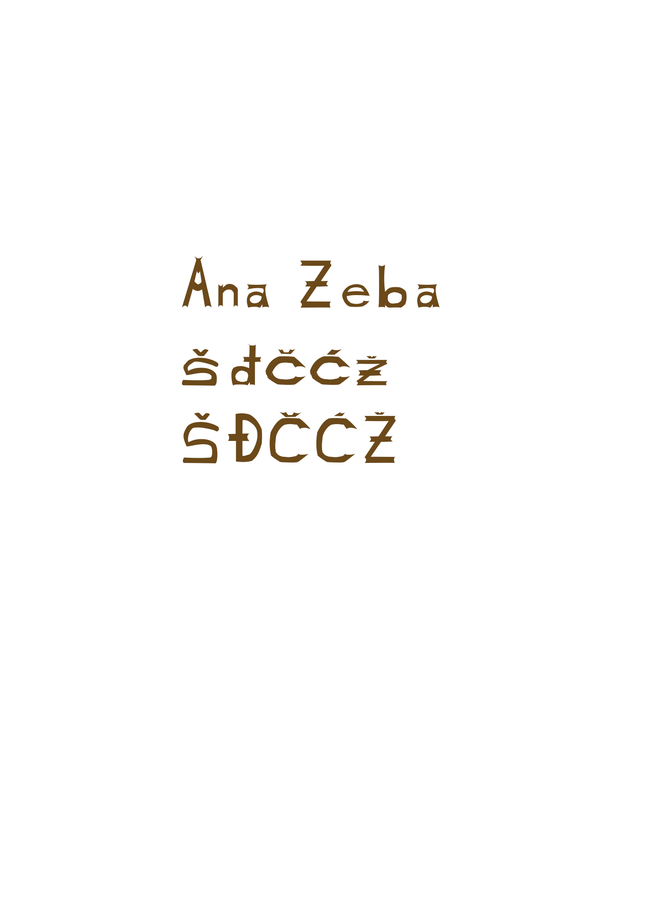
2. vježba- Bezierova krivulja, precizno crtanje
U Adobe Illustratoru koristila sam alat Pen za crtanje Bezierovih krivulja, pažljivo postavljajući kontrolne točke i ručke kako bih postigla glatke i precizne oblike. Zatim sam koristila opciju "Snap to Grid" kako bih osigurala točnost i ravnotežu u dizajnu. Na kraju, koristila sam alate za uređivanje poput Direct Selection Tool za dobro podešavanje krivulja i oblika do savršenstva.
3. vježba- boja, transformacije
U Adobe Illustratoru, za bojenje objekata koristila sam alat za biranje boja (Color Picker) i ispunila oblike različitim bojama koristeći alat za ispunu (Fill) i alat za potez (Stroke). Za transformacije objekata koristila sam alate kao što su Scale, Rotate i Reflect kako bih prilagodila veličinu, kut i simetriju dizajna. Također sam koristila opciju "Transform Each" za precizne transformacije više objekata istovremeno, održavajući dosljednost i proporcije u cijelom projektu.
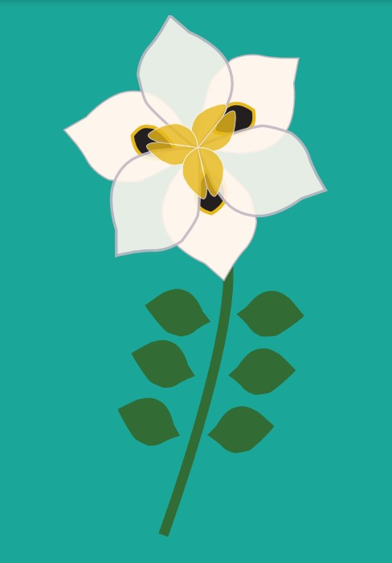 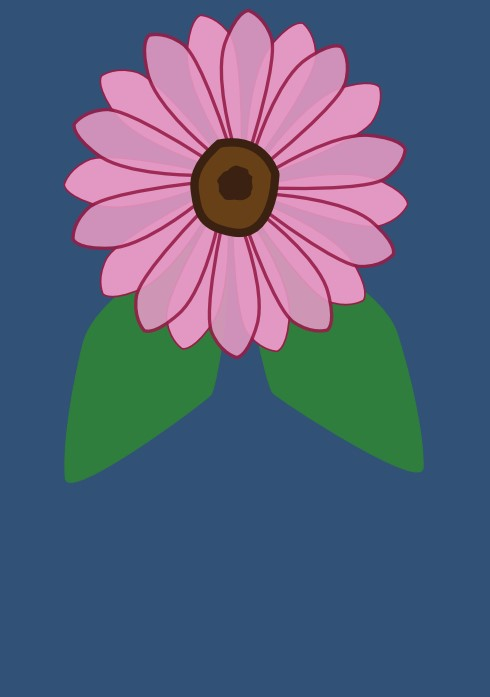
4. vježba- gradijenti, transparencija
U Adobe Illustratoru koristila sam alat Gradient za primjenu gradijenata, odabirući boje i postavljajući prijelazne točke kako bih stvorila glatke prijelaze između boja. Zatim sam koristila prozor Transparency za podešavanje prozirnosti objekata, omogućujući im da se djelomično ili potpuno stapaju s pozadinom ili drugim elementima. Također sam primijenila različite modove miješanja (Blend Modes) kako bih postigla željene efekte miješanja boja i transparencije između slojeva.
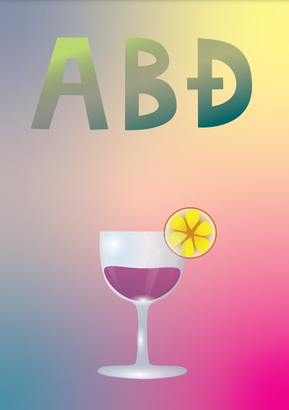 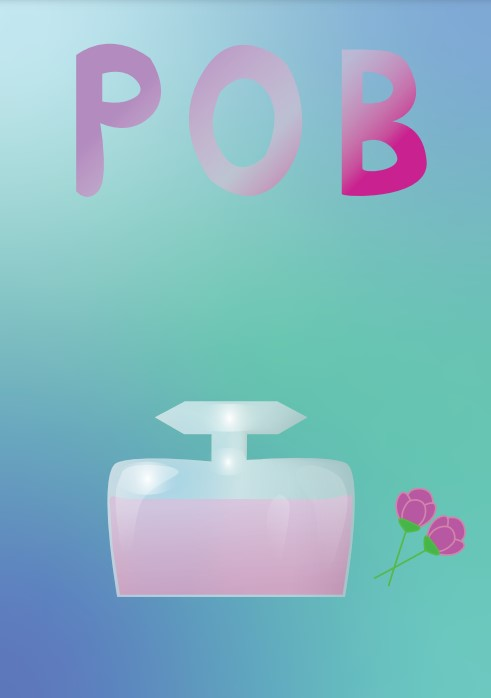
1. projektni zadatak
Za izradu projektnog zadatka u Adobe Illustratoru koristila sam sve prethodno naučene sposobnosti te napravila svoje teglice sa voćem i povrćem.
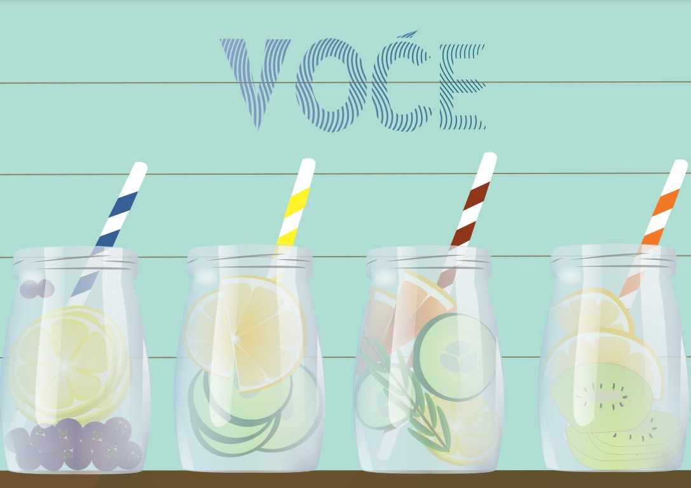
5. vježba- retuširanje
U Photoshopu sam započela retuširanje koristeći alat Spot Healing Brush za uklanjanje manjih nesavršenosti poput mrlja i bora. Zatim sam primijenila alat Clone Stamp za precizno kopiranje i miješanje dijelova slike kako bih popravila veće nepravilnosti i oštećenja. Na kraju, koristila sam alat Dodge and Burn za prilagodbu svjetline i sjena, čime sam postigla prirodniji i uravnoteženiji izgled retuširane fotografije.
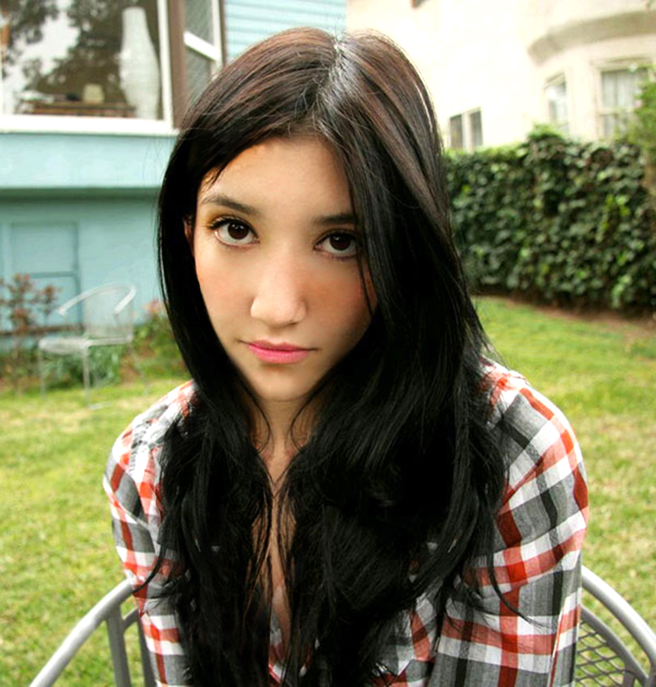

6. vježba- koloriranje
U Photoshopu sam započela koloriranje slike tako što sam stvorila novi sloj za svaku boju i postavila ga u mod Blending Mode: Color. Zatim sam koristila alat Brush s prilagođenim opacitetom i veličinom za pažljivo nanošenje boja na odabrane dijelove slike, pazeći na detalje i prijelaze. Na kraju sam koristila alate Hue/Saturation i Color Balance kako bih fino podesila tonove i osigurala harmoničan i prirodan izgled obojenih dijelova.
 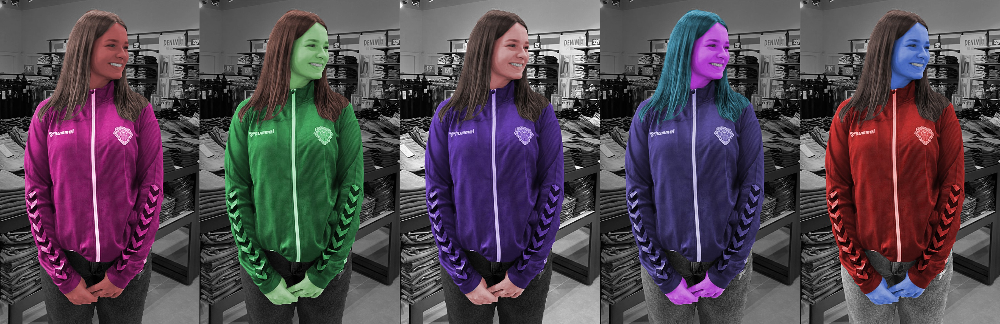
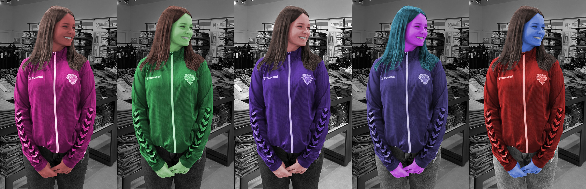
7. vježba- fotomontaža
Za fotomontažu u Photoshopu započela sam odabirom i otvaranjem svih slika koje sam htjela kombinirati. Zatim sam koristila alat Move Tool za premještanje elemenata između različitih slika, te alate za selekciju kao što su Lasso i Magic Wand za precizno izrezivanje dijelova slika koje sam htjela uklopiti. Na kraju sam koristila alate za prilagodbu kao što su Levels, Curves i Color Balance kako bih uskladila boje i osvjetljenje između različitih elemenata, te alat Brush i maske slojeva za fino ugađanje rubova i stvaranje besprijekorne montaže.

2. projektni zadatak
Za drugi projektni zadatak koristila sam svo svoje naučeno znanje kako bih ispunila sve zadane zadatke.
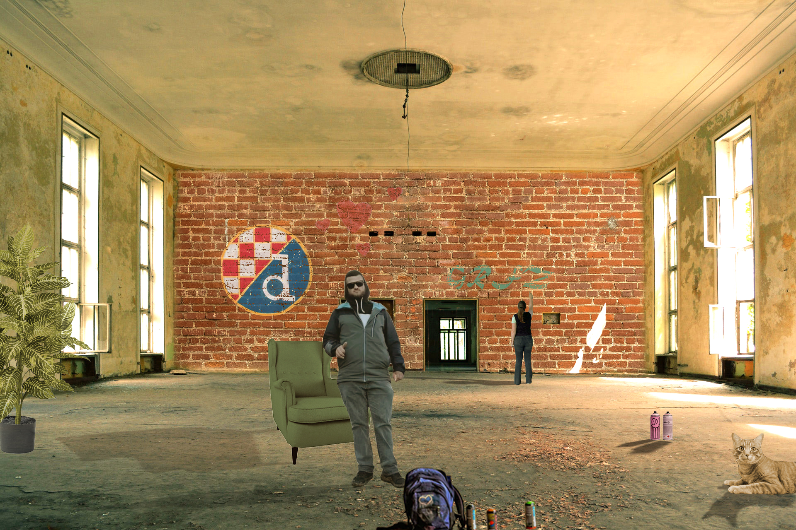
8. vježba- cinemagraf
Za stvaranje cinemagrafa u Adobe Premiere Pro-u, prvo sam uvezla videozapis u projekt i postavila ga na vremensku liniju. Zatim sam koristila alat za odabir i maskiranje dijelova videozapisa koje želim animirati, primijenila efekt "Loop" na te dijelove kako bi se kontinuirano ponavljali, te izvezla konačni cinemagraf u željenom formatu.
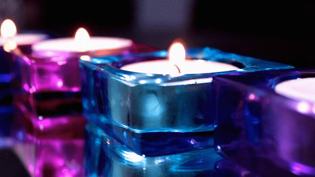

9. vježba- videoobrada
Za videoobradu koristila sam više različitih isječaka te sam ih uredila. Zatim sam koristila alate za rezanje i uređivanje kako bih odabrala željene dijelove videa. Nakon toga sam primijenila različite efekte kao što su color grading, stabilizacija slike ili dodavanje tekstova kako bih poboljšala vizualni izgled i komunikaciju sadržaja. Na kraju sam izvezla finalni video u željenom formatu spreman za objavljivanje.